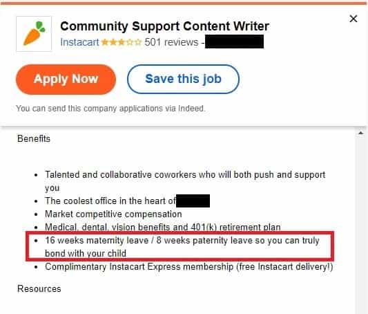
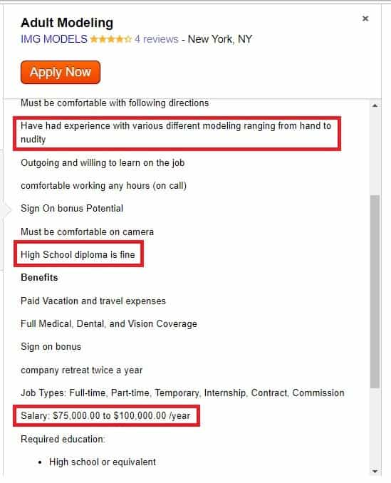
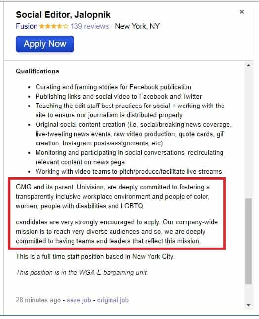
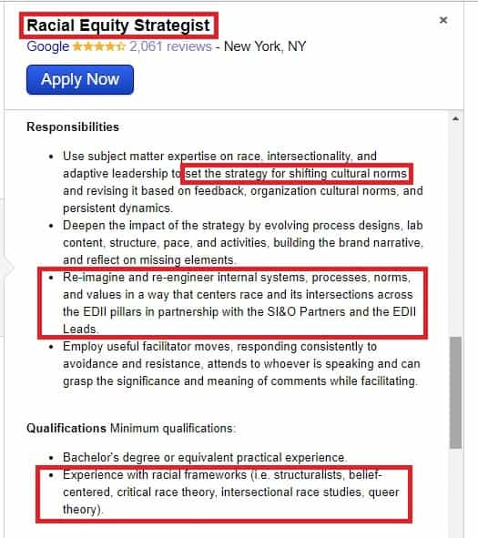
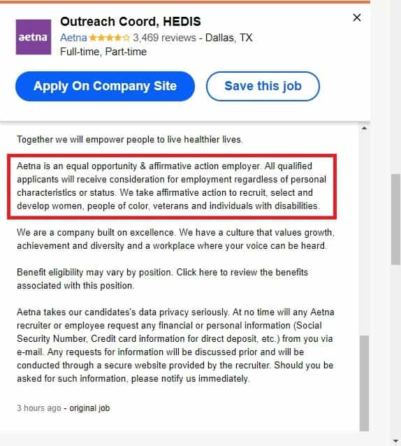

John Carver is a four year ROK veteran with over fifty articles of SJW-triggering truth bombs on archive. You can follow him on Twitter if you are so inclined.


By now, we are pretty well aware of how most white-collar jobs in the United States and other western countries absolutely blow for a myriad of reasons.
A huge percentage of them only exist for selling an arguably useless vanity product, in lieu of an essential service that most skilled tradesmen or specialty doctors provide. Others objectively make society worse by promoting mass media degeneracy (Buzzfeed etc) or AIDS-spreading sexual promiscuity (Grindr apps etc).
Many office environments are clearly becoming 70% or more female, and there is increasingly a dearth of white men in such places other than the CEO or upper management positions. Many of these men are often Jewish on closer inspection. Certainly not a member of the USA’s core Anglo-Germanic stock of yesteryear.
This stands in stark contrast to the idea that everyday Christian white men are still the “supreme” choice in being hired above all other candidates.
What social justice wants to make you “think” about current hiring practices
Additionally, a lot of today’s job advertisements are clearly indicating that—presumably heterosexual—white men rank near the bottom for what many employers seek in new candidates. This article will provide six examples of employment ads seen on Indeed.com, which shows it literally pays to be non-white or a woman.
Just leave the world alone please…
Along with Tel Aviv, New York City is the most Jewish city on Earth, so in many respects this advertisement comes as no surprise. However, replace all instances of ‘Jewish’ with ‘White’ and suddenly this ad will look like it came straight from ‘Mein Kampf’ according to modern leftists.
Not only is it insanely hypocritical for the Jewish community to create such initiatives specifically for their own enrichment (when they are the most active group involved in crushing any white identitarian movements), but it looks like 98% of their “fellow white people” in the United States can’t expect to be hired for this position anyway.

We hear spiels about “women’s economic empowerment” and “gender wage gaps” and “workplace equality” seemingly all the time. So why are women afforded vastly superior parental leave benefits compared to men if they truly want to take this “equality” stuff seriously?
If I was personally running this business, I would see absolutely no benefit whatsoever to hiring any women under the age of 45. Any pregnancies at work would result in me losing two entire months of productivity that would not be lost in an all-male environment. Many soon-to-be fathers would, in fact, be willing to take no paternity leave at all, so that they could bring in additional income for their growing family.

Okay, it’s not specifically an “office” environment (other than the casting couch), but this job advertisement shows precisely how easy it is for young women to get a quick nest egg compared to young men, and with minimal effort to boot.
There are very few jobs in the nation where an 18-year-old man can expect to earn anywhere near this low-end of $75,000 a year. Especially where just a “high school diploma is fine” and without any formal trade skills. In fact, many college-educated men and other skilled tradesmen won’t ever earn $75k a year at any point in their lifetime.

Employers in the United States are (supposed to) not be allowed to discriminate in their hiring practices on the basis of race, gender, sexuality, marital status, and other criteria. So why are so many now being open in essentially saying “straight white men need not apply”?
When this job placement is saying “people of color, women, people with disabilities and LGBTQ candidates are very strongly encouraged to apply”, you know they are already adamant in their mission of hiring one of those types. All while still giving the veneer that everyone has “equal opportunity” for the job.

Fetch me a barf bag because I’m going to be sick….
Not only do you know that Google is going to be offering a low six-figure salary for this epitome of a “make work” job, but you can rest assured it’s going to go to anybody but a heterosexual and non-Jewish white male. In fact, it probably will go to a Jewish person of some kind.
“Setting the strategy for shifting cultural norms” and “critical race theory” sounds very Frankfurty.

Being both “equal opportunity” and “affirmative action” in the same sentence is an oxymoron if I ever heard one.
A white male maybe has a chance at landing this job if he’s a “rock star” or “ninja” among other eye-rolling office superman terms, but a black female army veteran with Asperger’s syndrome is right on the money.
After all, white men need to “be quiet and listen” in school or the workplace now, so that more historically marginalized voices can be heard in the name of diversity and excellence.
Non-whites can’t be racist and there is no such thing as “toxic femininity”
There is no shortage of resources on Return of Kings which shows how unbearable white-collar work has become for masculine and conservative men of any race (1, 2, 3). However, it’s undeniable that white men in the United States and other western countries are having to metaphorically devour a particularly foul shit sandwich in the name of being “inclusive”. All courtesy of human resources and social justice.
So either get into male-dominated fields like the trades, study something so in demand that petty discrimination is non-existent, or strike out on your own with self-employment. Because things are only going to get a lot worse with white-collar work before things get better. Kind of like South Africa.
Read Next: The Damaging Effects Of Jewish Intellectualism And Activism On Western Culture